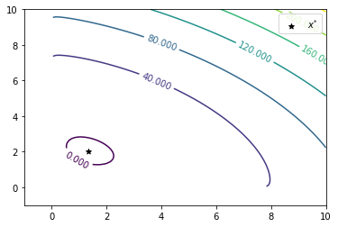
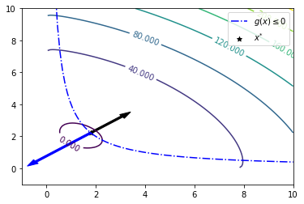
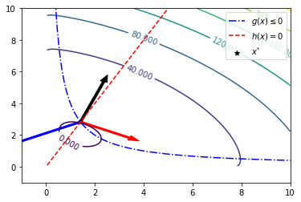

<!DOCTYPE html>


<html lang="en" data-content_root="../../" >

  <head>
    <meta charset="utf-8" />
    <meta name="viewport" content="width=device-width, initial-scale=1.0" /><meta name="viewport" content="width=device-width, initial-scale=1" />

    <title>7.2. Local Optimality Conditions &#8212; Optimization for Decision Science</title>
  
  
  
  <script data-cfasync="false">
    document.documentElement.dataset.mode = localStorage.getItem("mode") || "";
    document.documentElement.dataset.theme = localStorage.getItem("theme") || "";
  </script>
  
  <!-- Loaded before other Sphinx assets -->
  <link href="../../_static/styles/theme.css?digest=dfe6caa3a7d634c4db9b" rel="stylesheet" />
<link href="../../_static/styles/bootstrap.css?digest=dfe6caa3a7d634c4db9b" rel="stylesheet" />
<link href="../../_static/styles/pydata-sphinx-theme.css?digest=dfe6caa3a7d634c4db9b" rel="stylesheet" />

  
  <link href="../../_static/vendor/fontawesome/6.5.2/css/all.min.css?digest=dfe6caa3a7d634c4db9b" rel="stylesheet" />
  <link rel="preload" as="font" type="font/woff2" crossorigin href="../../_static/vendor/fontawesome/6.5.2/webfonts/fa-solid-900.woff2" />
<link rel="preload" as="font" type="font/woff2" crossorigin href="../../_static/vendor/fontawesome/6.5.2/webfonts/fa-brands-400.woff2" />
<link rel="preload" as="font" type="font/woff2" crossorigin href="../../_static/vendor/fontawesome/6.5.2/webfonts/fa-regular-400.woff2" />

    <link rel="stylesheet" type="text/css" href="../../_static/pygments.css?v=03e43079" />
    <link rel="stylesheet" type="text/css" href="../../_static/styles/sphinx-book-theme.css?v=eba8b062" />
    <link rel="stylesheet" type="text/css" href="../../_static/togglebutton.css?v=13237357" />
    <link rel="stylesheet" type="text/css" href="../../_static/copybutton.css?v=76b2166b" />
    <link rel="stylesheet" type="text/css" href="../../_static/mystnb.4510f1fc1dee50b3e5859aac5469c37c29e427902b24a333a5f9fcb2f0b3ac41.css" />
    <link rel="stylesheet" type="text/css" href="../../_static/sphinx-thebe.css?v=4fa983c6" />
    <link rel="stylesheet" type="text/css" href="../../_static/sphinx-design.min.css?v=95c83b7e" />
  
  <!-- Pre-loaded scripts that we'll load fully later -->
  <link rel="preload" as="script" href="../../_static/scripts/bootstrap.js?digest=dfe6caa3a7d634c4db9b" />
<link rel="preload" as="script" href="../../_static/scripts/pydata-sphinx-theme.js?digest=dfe6caa3a7d634c4db9b" />
  <script src="../../_static/vendor/fontawesome/6.5.2/js/all.min.js?digest=dfe6caa3a7d634c4db9b"></script>

    <script src="../../_static/documentation_options.js?v=9eb32ce0"></script>
    <script src="../../_static/doctools.js?v=9a2dae69"></script>
    <script src="../../_static/sphinx_highlight.js?v=dc90522c"></script>
    <script src="../../_static/clipboard.min.js?v=a7894cd8"></script>
    <script src="../../_static/copybutton.js?v=f281be69"></script>
    <script src="../../_static/scripts/sphinx-book-theme.js?v=887ef09a"></script>
    <script>let toggleHintShow = 'Click to show';</script>
    <script>let toggleHintHide = 'Click to hide';</script>
    <script>let toggleOpenOnPrint = 'true';</script>
    <script src="../../_static/togglebutton.js?v=4a39c7ea"></script>
    <script>var togglebuttonSelector = '.toggle, .admonition.dropdown';</script>
    <script src="../../_static/design-tabs.js?v=f930bc37"></script>
    <script>const THEBE_JS_URL = "https://unpkg.com/thebe@0.8.2/lib/index.js"; const thebe_selector = ".thebe,.cell"; const thebe_selector_input = "pre"; const thebe_selector_output = ".output, .cell_output"</script>
    <script async="async" src="../../_static/sphinx-thebe.js?v=c100c467"></script>
    <script>var togglebuttonSelector = '.toggle, .admonition.dropdown';</script>
    <script>const THEBE_JS_URL = "https://unpkg.com/thebe@0.8.2/lib/index.js"; const thebe_selector = ".thebe,.cell"; const thebe_selector_input = "pre"; const thebe_selector_output = ".output, .cell_output"</script>
    <script>window.MathJax = {"options": {"processHtmlClass": "tex2jax_process|mathjax_process|math|output_area"}}</script>
    <script defer="defer" src="https://cdn.jsdelivr.net/npm/mathjax@3/es5/tex-mml-chtml.js"></script>
    <script>DOCUMENTATION_OPTIONS.pagename = 'notebooks/7/Local-Optimality';</script>
    <link rel="index" title="Index" href="../../genindex.html" />
    <link rel="search" title="Search" href="../../search.html" />
    <link rel="next" title="7.3. Analysis of KKT Conditions" href="KKT-Multipliers.html" />
    <link rel="prev" title="7.1. Convexity Revisited" href="Convexity.html" />
  <meta name="viewport" content="width=device-width, initial-scale=1"/>
  <meta name="docsearch:language" content="en"/>
  </head>
  
  
  <body data-bs-spy="scroll" data-bs-target=".bd-toc-nav" data-offset="180" data-bs-root-margin="0px 0px -60%" data-default-mode="">

  
  
  <div id="pst-skip-link" class="skip-link d-print-none"><a href="#main-content">Skip to main content</a></div>
  
  <div id="pst-scroll-pixel-helper"></div>
  
  <button type="button" class="btn rounded-pill" id="pst-back-to-top">
    <i class="fa-solid fa-arrow-up"></i>Back to top</button>

  
  <input type="checkbox"
          class="sidebar-toggle"
          id="pst-primary-sidebar-checkbox"/>
  <label class="overlay overlay-primary" for="pst-primary-sidebar-checkbox"></label>
  
  <input type="checkbox"
          class="sidebar-toggle"
          id="pst-secondary-sidebar-checkbox"/>
  <label class="overlay overlay-secondary" for="pst-secondary-sidebar-checkbox"></label>
  
  <div class="search-button__wrapper">
    <div class="search-button__overlay"></div>
    <div class="search-button__search-container">
<form class="bd-search d-flex align-items-center"
      action="../../search.html"
      method="get">
  <i class="fa-solid fa-magnifying-glass"></i>
  <input type="search"
         class="form-control"
         name="q"
         id="search-input"
         placeholder="Search this book..."
         aria-label="Search this book..."
         autocomplete="off"
         autocorrect="off"
         autocapitalize="off"
         spellcheck="false"/>
  <span class="search-button__kbd-shortcut"><kbd class="kbd-shortcut__modifier">Ctrl</kbd>+<kbd>K</kbd></span>
</form></div>
  </div>

  <div class="pst-async-banner-revealer d-none">
  <aside id="bd-header-version-warning" class="d-none d-print-none" aria-label="Version warning"></aside>
</div>

  
    <header class="bd-header navbar navbar-expand-lg bd-navbar d-print-none">
    </header>
  

  <div class="bd-container">
    <div class="bd-container__inner bd-page-width">
      
      
      
      <div class="bd-sidebar-primary bd-sidebar">
        

  
  <div class="sidebar-header-items sidebar-primary__section">
    
    
    
    
  </div>
  
    <div class="sidebar-primary-items__start sidebar-primary__section">
        <div class="sidebar-primary-item">

  
    
  

<a class="navbar-brand logo" href="../../intro.html">
  
  
  
  
  
    
    
      
    
    
    
    <script>document.write(``);</script>
  
  
</a></div>
        <div class="sidebar-primary-item">

 <script>
 document.write(`
   <button class="btn search-button-field search-button__button" title="Search" aria-label="Search" data-bs-placement="bottom" data-bs-toggle="tooltip">
    <i class="fa-solid fa-magnifying-glass"></i>
    <span class="search-button__default-text">Search</span>
    <span class="search-button__kbd-shortcut"><kbd class="kbd-shortcut__modifier">Ctrl</kbd>+<kbd class="kbd-shortcut__modifier">K</kbd></span>
   </button>
 `);
 </script></div>
        <div class="sidebar-primary-item"><nav class="bd-links bd-docs-nav" aria-label="Main">
    <div class="bd-toc-item navbar-nav active">
        
        <ul class="nav bd-sidenav bd-sidenav__home-link">
            <li class="toctree-l1">
                <a class="reference internal" href="../../intro.html">
                    Optimization for Decision Science
                </a>
            </li>
        </ul>
        <p aria-level="2" class="caption" role="heading"><span class="caption-text">Organization</span></p>
<ul class="nav bd-sidenav">
<li class="toctree-l1 has-children"><a class="reference internal" href="../../org/intro.html">Welcome</a><details><summary><span class="toctree-toggle" role="presentation"><i class="fa-solid fa-chevron-down"></i></span></summary><ul>
<li class="toctree-l2"><a class="reference internal" href="../../org/syllabus.html">Syllabus</a></li>
<li class="toctree-l2"><a class="reference internal" href="../../org/calendar.html">Fall 2024 Calendar</a></li>
<li class="toctree-l2"><a class="reference internal" href="../../org/contribute.html">Contribution Instructions</a></li>
<li class="toctree-l2"><a class="reference internal" href="../../org/workshop.html">Computational Optimization in Python (São Paulo, Brazil)</a></li>
</ul>
</details></li>
<li class="toctree-l1 has-children"><a class="reference internal" href="../../org/assignments.html">Assignments</a><details><summary><span class="toctree-toggle" role="presentation"><i class="fa-solid fa-chevron-down"></i></span></summary><ul>
<li class="toctree-l2"><a class="reference internal" href="../assignments/Pyomo1.html">Pyomo Homework 1</a></li>
<li class="toctree-l2"><a class="reference internal" href="../assignments/Pyomo2.html">Pyomo Homework 2</a></li>
<li class="toctree-l2"><a class="reference internal" href="../assignments/Pyomo3.html">Pyomo Homework 3</a></li>
<li class="toctree-l2"><a class="reference internal" href="../../org/project1.html">Project 1</a></li>
<li class="toctree-l2"><a class="reference internal" href="../assignments/Algorithms1.html">Algorithms Homework 1</a></li>
<li class="toctree-l2"><a class="reference internal" href="../assignments/Algorithms2.html">Algorithms Homework 2</a></li>
<li class="toctree-l2"><a class="reference internal" href="../../org/project2.html">Project 2</a></li>
<li class="toctree-l2"><a class="reference internal" href="../assignments/Algorithms3.html">Algorithms Homework 3</a></li>
<li class="toctree-l2"><a class="reference internal" href="../assignments/Algorithms4.html">Algorithms Homework 4</a></li>
</ul>
</details></li>
<li class="toctree-l1 has-children"><a class="reference internal" href="../../org/archive.html">Archive</a><details><summary><span class="toctree-toggle" role="presentation"><i class="fa-solid fa-chevron-down"></i></span></summary><ul>
<li class="toctree-l2"><a class="reference internal" href="../assignments/Pyomo-Mini-Project.html">Pyomo Mini-Project: Receding Horizon Stochastic Control</a></li>
<li class="toctree-l2"><a class="reference internal" href="../../org/semester_project.html">Semester Project (Spring 2023)</a></li>
</ul>
</details></li>
</ul>
<p aria-level="2" class="caption" role="heading"><span class="caption-text">Optimization Modeling in Pyomo</span></p>
<ul class="nav bd-sidenav">
<li class="toctree-l1 has-children"><a class="reference internal" href="../1/getting-started.html">1. Getting Started with Pyomo</a><details><summary><span class="toctree-toggle" role="presentation"><i class="fa-solid fa-chevron-down"></i></span></summary><ul>
<li class="toctree-l2"><a class="reference internal" href="../1/Local-Install.html">1.1. Local Installation</a></li>
<li class="toctree-l2"><a class="reference internal" href="../1/Optimization-Modeling.html">1.2. Optimization Modeling with Applications</a></li>
<li class="toctree-l2"><a class="reference internal" href="../1/Pyomo-Introduction.html">1.3. Your First Optimization Problem</a></li>
<li class="toctree-l2"><a class="reference internal" href="../1/LP.html">1.4. Continuous Optimization: Linear Programming</a></li>
<li class="toctree-l2"><a class="reference internal" href="../1/NLP.html">1.5. Continuous Optimization: Nonlinear Programming</a></li>
<li class="toctree-l2"><a class="reference internal" href="../1/IP.html">1.6. Integer Programs</a></li>
<li class="toctree-l2"><a class="reference internal" href="../1/Pyomo-Nuts-and-Bolts.html">1.7. 60 Minutes to Pyomo: An Energy Storage Model Predictive Control Example</a></li>
</ul>
</details></li>
<li class="toctree-l1 has-children"><a class="reference internal" href="../2/logic.html">2. Logical Modeling</a><details><summary><span class="toctree-toggle" role="presentation"><i class="fa-solid fa-chevron-down"></i></span></summary><ul>
<li class="toctree-l2"><a class="reference internal" href="../2/Logical_Modeling_GDP.html">2.1. Logical Modeling and Generalized Disjunctive Programs</a></li>
<li class="toctree-l2"><a class="reference internal" href="../2/Modeling_Disjunctions_Strip_Packing.html">2.2. Modeling Disjunctions through the Strip Packing Problem</a></li>
</ul>
</details></li>
<li class="toctree-l1 has-children"><a class="reference internal" href="../3/dynamics.html">3. Dynamic Optimization</a><details><summary><span class="toctree-toggle" role="presentation"><i class="fa-solid fa-chevron-down"></i></span></summary><ul>
<li class="toctree-l2"><a class="reference internal" href="../3/PyomoDAE_car.html">3.1. Pyomo.DAE Example: Race Car</a></li>
<li class="toctree-l2"><a class="reference internal" href="../3/PyomoDAE_TCLab.html">3.2. Pyomo.DAE Example: Temperature Control Lab</a></li>
<li class="toctree-l2"><a class="reference internal" href="../3/DAE_background.html">3.3. Differential Algebraic Equations (DAEs)</a></li>
<li class="toctree-l2"><a class="reference internal" href="../3/DAE_numeric_integration.html">3.4. Numeric Integration for DAEs</a></li>
<li class="toctree-l2"><a class="reference internal" href="../3/PyomoDAE_theory.html">3.5. Dynamic Optimization with Collocation and Pyomo.DAE</a></li>
<li class="toctree-l2"><a class="reference internal" href="../3/PyomoDAE_example.html">3.6. Pyomo.DAE: Racing Example Revisited</a></li>
</ul>
</details></li>
<li class="toctree-l1 has-children"><a class="reference internal" href="../4/uncertainty.html">4. Optimization Under Uncertainty</a><details><summary><span class="toctree-toggle" role="presentation"><i class="fa-solid fa-chevron-down"></i></span></summary><ul>
<li class="toctree-l2"><a class="reference internal" href="../4/SP.html">4.1. Stochastic Programming</a></li>
<li class="toctree-l2"><a class="reference internal" href="../4/blocks.html">4.2. Blocks and Other Pyomo Best Practices</a></li>
<li class="toctree-l2"><a class="reference internal" href="../4/AdvancedTopics.html">4.3. Advanced Topics in Stochastic Programming</a></li>
<li class="toctree-l2"><a class="reference internal" href="../4/RiskMeasures.html">4.4. Risk Measures and Portfolio Optimization</a></li>
</ul>
</details></li>
<li class="toctree-l1 has-children"><a class="reference internal" href="../5/data.html">5. Data Science and Applied Statistics</a><details><summary><span class="toctree-toggle" role="presentation"><i class="fa-solid fa-chevron-down"></i></span></summary><ul>
<li class="toctree-l2"><a class="reference internal" href="../5/Parmest-tutorial.html">5.1. Parameter estimation with <code class="docutils literal notranslate"><span class="pre">parmest</span></code></a></li>
<li class="toctree-l2"><a class="reference internal" href="../5/Parmest-generate-data.html">5.2. Supplementary material: data for parmest tutorial</a></li>
<li class="toctree-l2"><a class="reference internal" href="../5/Pyomo_DoE_Tutorial.html">5.3. Optimizing Experiments with <code class="docutils literal notranslate"><span class="pre">Pyomo.DoE</span></code></a></li>
</ul>
</details></li>
</ul>
<p aria-level="2" class="caption" role="heading"><span class="caption-text">Algorithms and Theory</span></p>
<ul class="current nav bd-sidenav">
<li class="toctree-l1 has-children"><a class="reference internal" href="../6/unconstrained.html">6. Unconstrained Nonlinear Optimization</a><details><summary><span class="toctree-toggle" role="presentation"><i class="fa-solid fa-chevron-down"></i></span></summary><ul>
<li class="toctree-l2"><a class="reference internal" href="../6/Math-Primer-1.html">6.1. Linear Algebra Review and SciPy Basics</a></li>
<li class="toctree-l2"><a class="reference internal" href="../6/Math-Primer-2.html">6.2. Mathematics Primer</a></li>
<li class="toctree-l2"><a class="reference internal" href="../6/Optimality.html">6.3. Unconstrained Optimality Conditions</a></li>
<li class="toctree-l2"><a class="reference internal" href="../6/Newton-Methods.html">6.4. Newton-type Methods for Unconstrained Optimization</a></li>
<li class="toctree-l2"><a class="reference internal" href="../6/Quasi-Newton-Methods.html">6.5. Quasi-Newton Methods for Unconstrained Optimization</a></li>
<li class="toctree-l2"><a class="reference internal" href="../6/Globalization.html">6.6. Descent and Globalization</a></li>
</ul>
</details></li>
<li class="toctree-l1 current active has-children"><a class="reference internal" href="constrained.html">7. Constrained Nonlinear Optimization</a><details open="open"><summary><span class="toctree-toggle" role="presentation"><i class="fa-solid fa-chevron-down"></i></span></summary><ul class="current">
<li class="toctree-l2"><a class="reference internal" href="Convexity.html">7.1. Convexity Revisited</a></li>
<li class="toctree-l2 current active"><a class="current reference internal" href="#">7.2. Local Optimality Conditions</a></li>
<li class="toctree-l2"><a class="reference internal" href="KKT-Multipliers.html">7.3. Analysis of KKT Conditions</a></li>
<li class="toctree-l2"><a class="reference internal" href="Constraint-Qualifications.html">7.4. Constraint Qualifications</a></li>
<li class="toctree-l2"><a class="reference internal" href="Second-Order.html">7.5. Second Order Optimality Conditions</a></li>
<li class="toctree-l2"><a class="reference internal" href="degeneracy_hunter.html">7.6. NLP Diagnostics with Degeneracy Hunter</a></li>
<li class="toctree-l2"><a class="reference internal" href="Interior-Point1.html">7.7. Simple Netwon Method for Equality Constrained NLPs</a></li>
<li class="toctree-l2"><a class="reference internal" href="Interior-Point2.html">7.8. Inertia-Corrected Netwon Method for Equality Constrained NLPs</a></li>
</ul>
</details></li>
<li class="toctree-l1 has-children"><a class="reference internal" href="../8/special-topics.html">8. Special Topics</a><details><summary><span class="toctree-toggle" role="presentation"><i class="fa-solid fa-chevron-down"></i></span></summary><ul>
<li class="toctree-l2"><a class="reference internal" href="../8/MILP.html">8.1. Integer Programming with Simple Branch and Bound</a></li>
<li class="toctree-l2"><a class="reference internal" href="../8/MINLP-Algorithms.html">8.2. MINLP Algorithms</a></li>
<li class="toctree-l2"><a class="reference internal" href="../8/Global-Opt.html">8.3. Deterministic Global Optimization</a></li>
</ul>
</details></li>
</ul>
<p aria-level="2" class="caption" role="heading"><span class="caption-text">Student Contributions</span></p>
<ul class="nav bd-sidenav">
<li class="toctree-l1 has-children"><a class="reference internal" href="../contrib/pyomo.html">More Pyomo Examples</a><details><summary><span class="toctree-toggle" role="presentation"><i class="fa-solid fa-chevron-down"></i></span></summary><ul>
<li class="toctree-l2"><a class="reference internal" href="../contrib/semiconductor_manufacturing.html">Semiconductor Production Planning</a></li>
<li class="toctree-l2"><a class="reference internal" href="../contrib/student_diet.html">Optimization of Daily Diet Using Pyomo</a></li>
<li class="toctree-l2"><a class="reference internal" href="../contrib/blending.html">Blending Under Uncertainty</a></li>
<li class="toctree-l2"><a class="reference internal" href="../contrib/vehicle_routing.html">Vehicle Routing</a></li>

<li class="toctree-l2"><a class="reference internal" href="../contrib/portfolio_optimization_extended.html">Risk Measures and Portfolio Optimization: Expanded</a></li>
<li class="toctree-l2"><a class="reference internal" href="../contrib/race_car_extended.html">Extended Race Car Optimization Models</a></li>
<li class="toctree-l2"><a class="reference internal" href="../contrib/hot_air_balloon.html">Hot Air Balloon Dynamic Control</a></li>
<li class="toctree-l2"><a class="reference internal" href="../contrib/reactor_design.html">Chemical Reactor Design</a></li>
<li class="toctree-l2"><a class="reference internal" href="../contrib/Disaster_Response_Plan.html">Disaster Response Plan Optimization</a></li>
<li class="toctree-l2"><a class="reference internal" href="../contrib/Sudoku_Solver.html">Sudoku Solver</a></li>
<li class="toctree-l2"><a class="reference internal" href="../contrib/more_circle_packing.html">Circle Packing Optimization</a></li>
</ul>
</details></li>
<li class="toctree-l1 has-children"><a class="reference internal" href="../contrib/modeling.html">Modeling Paradigms</a><details><summary><span class="toctree-toggle" role="presentation"><i class="fa-solid fa-chevron-down"></i></span></summary><ul>
<li class="toctree-l2"><a class="reference internal" href="../contrib/multi_objective.html">Multi-Objective Optimization</a></li>
<li class="toctree-l2"><a class="reference internal" href="../contrib/advanced_stochastic_programming.html">Advanced Topics in Stochastic Programming</a></li>


</ul>
</details></li>
<li class="toctree-l1 has-children"><a class="reference internal" href="../contrib/algorithms.html">Global Optimization</a><details><summary><span class="toctree-toggle" role="presentation"><i class="fa-solid fa-chevron-down"></i></span></summary><ul>
<li class="toctree-l2"><a class="reference internal" href="../contrib/Deterministic_Global_Optimization.html">Deterministic Global Optimization</a></li>
<li class="toctree-l2"><a class="reference internal" href="../contrib/Bayesian_Optimization1.html">Bayesian Optimization Tutorial 1</a></li>
<li class="toctree-l2"><a class="reference internal" href="../contrib/Bayesian_Optimization2.html">Bayesian Optimization Tutorial 2</a></li>
</ul>
</details></li>
<li class="toctree-l1 has-children"><a class="reference internal" href="../contrib/sgd.html">Stochastic Gradient Descent</a><details><summary><span class="toctree-toggle" role="presentation"><i class="fa-solid fa-chevron-down"></i></span></summary><ul>
<li class="toctree-l2"><a class="reference internal" href="../contrib/Stochastic-Gradient-Descent-1.html">Stochastic Gradient Descent Tutorial 1</a></li>
<li class="toctree-l2"><a class="reference internal" href="../contrib/Stochastic-Gradient-Descent-2.html">Stochastic Gradient Descent Tutorial 2</a></li>


<li class="toctree-l2"><a class="reference internal" href="../contrib/Stochastic-Gradient-Descent-3.html">Stochastic Gradient Descent Tutorial 3</a></li>
</ul>
</details></li>
<li class="toctree-l1 has-children"><a class="reference internal" href="../contrib/data.html">Machine Learning and Applied Statistics</a><details><summary><span class="toctree-toggle" role="presentation"><i class="fa-solid fa-chevron-down"></i></span></summary><ul>
<li class="toctree-l2"><a class="reference internal" href="../contrib/EM-MAP.html">Expectation Maximization Algorithm and MAP Estimation</a></li>
</ul>
</details></li>
</ul>

    </div>
</nav></div>
    </div>
  
  
  <div class="sidebar-primary-items__end sidebar-primary__section">
  </div>
  
  <div id="rtd-footer-container"></div>


      </div>
      
      <main id="main-content" class="bd-main" role="main">
        
        

<div class="sbt-scroll-pixel-helper"></div>

          <div class="bd-content">
            <div class="bd-article-container">
              
              <div class="bd-header-article d-print-none">
<div class="header-article-items header-article__inner">
  
    <div class="header-article-items__start">
      
        <div class="header-article-item"><button class="sidebar-toggle primary-toggle btn btn-sm" title="Toggle primary sidebar" data-bs-placement="bottom" data-bs-toggle="tooltip">
  <span class="fa-solid fa-bars"></span>
</button></div>
      
    </div>
  
  
    <div class="header-article-items__end">
      
        <div class="header-article-item">

<div class="article-header-buttons">


<div class="dropdown dropdown-launch-buttons">
  <button class="btn dropdown-toggle" type="button" data-bs-toggle="dropdown" aria-expanded="false" aria-label="Launch interactive content">
    <i class="fas fa-rocket"></i>
  </button>
  <ul class="dropdown-menu">
      
      
      
      <li><a href="https://colab.research.google.com/github/ndcbe/optimization/blob/master/notebooks/7/Local-Optimality.ipynb" target="_blank"
   class="btn btn-sm dropdown-item"
   title="Launch on Colab"
   data-bs-placement="left" data-bs-toggle="tooltip"
>
  

<span class="btn__icon-container">
  
    
  </span>
<span class="btn__text-container">Colab</span>
</a>
</li>
      
  </ul>
</div>


<div class="dropdown dropdown-source-buttons">
  <button class="btn dropdown-toggle" type="button" data-bs-toggle="dropdown" aria-expanded="false" aria-label="Source repositories">
    <i class="fab fa-github"></i>
  </button>
  <ul class="dropdown-menu">
      
      
      
      <li><a href="https://github.com/ndcbe/optimization" target="_blank"
   class="btn btn-sm btn-source-repository-button dropdown-item"
   title="Source repository"
   data-bs-placement="left" data-bs-toggle="tooltip"
>
  

<span class="btn__icon-container">
  <i class="fab fa-github"></i>
  </span>
<span class="btn__text-container">Repository</span>
</a>
</li>
      
      
      
      
      <li><a href="https://github.com/ndcbe/optimization/issues/new?title=Issue%20on%20page%20%2Fnotebooks/7/Local-Optimality.html&body=Your%20issue%20content%20here." target="_blank"
   class="btn btn-sm btn-source-issues-button dropdown-item"
   title="Open an issue"
   data-bs-placement="left" data-bs-toggle="tooltip"
>
  

<span class="btn__icon-container">
  <i class="fas fa-lightbulb"></i>
  </span>
<span class="btn__text-container">Open issue</span>
</a>
</li>
      
  </ul>
</div>


<div class="dropdown dropdown-download-buttons">
  <button class="btn dropdown-toggle" type="button" data-bs-toggle="dropdown" aria-expanded="false" aria-label="Download this page">
    <i class="fas fa-download"></i>
  </button>
  <ul class="dropdown-menu">
      
      
      
      <li><a href="../../_sources/notebooks/7/Local-Optimality.ipynb" target="_blank"
   class="btn btn-sm btn-download-source-button dropdown-item"
   title="Download source file"
   data-bs-placement="left" data-bs-toggle="tooltip"
>
  

<span class="btn__icon-container">
  <i class="fas fa-file"></i>
  </span>
<span class="btn__text-container">.ipynb</span>
</a>
</li>
      
      
      
      
      <li>
<button onclick="window.print()"
  class="btn btn-sm btn-download-pdf-button dropdown-item"
  title="Print to PDF"
  data-bs-placement="left" data-bs-toggle="tooltip"
>
  

<span class="btn__icon-container">
  <i class="fas fa-file-pdf"></i>
  </span>
<span class="btn__text-container">.pdf</span>
</button>
</li>
      
  </ul>
</div>


<button onclick="toggleFullScreen()"
  class="btn btn-sm btn-fullscreen-button"
  title="Fullscreen mode"
  data-bs-placement="bottom" data-bs-toggle="tooltip"
>
  

<span class="btn__icon-container">
  <i class="fas fa-expand"></i>
  </span>

</button>


<script>
document.write(`
  <button class="btn btn-sm nav-link pst-navbar-icon theme-switch-button" title="light/dark" aria-label="light/dark" data-bs-placement="bottom" data-bs-toggle="tooltip">
    <i class="theme-switch fa-solid fa-sun fa-lg" data-mode="light"></i>
    <i class="theme-switch fa-solid fa-moon fa-lg" data-mode="dark"></i>
    <i class="theme-switch fa-solid fa-circle-half-stroke fa-lg" data-mode="auto"></i>
  </button>
`);
</script>


<script>
document.write(`
  <button class="btn btn-sm pst-navbar-icon search-button search-button__button" title="Search" aria-label="Search" data-bs-placement="bottom" data-bs-toggle="tooltip">
    <i class="fa-solid fa-magnifying-glass fa-lg"></i>
  </button>
`);
</script>
<button class="sidebar-toggle secondary-toggle btn btn-sm" title="Toggle secondary sidebar" data-bs-placement="bottom" data-bs-toggle="tooltip">
    <span class="fa-solid fa-list"></span>
</button>
</div></div>
      
    </div>
  
</div>
</div>
              
              

<div id="jb-print-docs-body" class="onlyprint">
    <h1>Local Optimality Conditions</h1>
    <!-- Table of contents -->
    <div id="print-main-content">
        <div id="jb-print-toc">
            
            <div>
                <h2> Contents </h2>
            </div>
            <nav aria-label="Page">
                <ul class="visible nav section-nav flex-column">
<li class="toc-h2 nav-item toc-entry"><a class="reference internal nav-link" href="#unconstrained-optimality-conditions">7.2.1. Unconstrained Optimality Conditions</a></li>
<li class="toc-h2 nav-item toc-entry"><a class="reference internal nav-link" href="#balance-of-forces-interpretation">7.2.2. Balance of Forces Interpretation</a></li>
<li class="toc-h2 nav-item toc-entry"><a class="reference internal nav-link" href="#karush-kuhn-tucker-kkt-necessary-conditions">7.2.3. Karush-Kuhn-Tucker (KKT) Necessary Conditions</a></li>
<li class="toc-h2 nav-item toc-entry"><a class="reference internal nav-link" href="#kinematic-interpretation-via-example">7.2.4. Kinematic Interpretation via Example</a><ul class="nav section-nav flex-column">
<li class="toc-h3 nav-item toc-entry"><a class="reference internal nav-link" href="#define-function-for-visualization">7.2.4.1. Define Function for Visualization</a></li>
<li class="toc-h3 nav-item toc-entry"><a class="reference internal nav-link" href="#define-function-to-solve-optimization-problem-with-pyomo">7.2.4.2. Define function to solve optimization problem with Pyomo</a></li>
<li class="toc-h3 nav-item toc-entry"><a class="reference internal nav-link" href="#take-1-unconstrained">7.2.4.3. Take 1: Unconstrained</a></li>
<li class="toc-h3 nav-item toc-entry"><a class="reference internal nav-link" href="#take-2-with-g-x-leq-0">7.2.4.4. Take 2. With <span class="math notranslate nohighlight">\(g(x) \leq 0\)</span></a></li>
<li class="toc-h3 nav-item toc-entry"><a class="reference internal nav-link" href="#take-3-with-g-x-leq-0-and-h-x-0">7.2.4.5. Take 3. With <span class="math notranslate nohighlight">\(g(x) \leq 0\)</span> and <span class="math notranslate nohighlight">\(h(x) = 0\)</span></a></li>
<li class="toc-h3 nav-item toc-entry"><a class="reference internal nav-link" href="#discussion">7.2.4.6. Discussion</a></li>
<li class="toc-h3 nav-item toc-entry"><a class="reference internal nav-link" href="#analysis-without-constraints">7.2.4.7. Analysis without Constraints</a></li>
<li class="toc-h3 nav-item toc-entry"><a class="reference internal nav-link" href="#analysis-with-constraints">7.2.4.8. Analysis with Constraints</a></li>
</ul>
</li>
</ul>
            </nav>
        </div>
    </div>
</div>

              
                
<div id="searchbox"></div>
                <article class="bd-article">
                  
  <section class="tex2jax_ignore mathjax_ignore" id="local-optimality-conditions">
<h1><span class="section-number">7.2. </span>Local Optimality Conditions<a class="headerlink" href="#local-optimality-conditions" title="Link to this heading">#</a></h1>
<p><strong>Reference</strong> Section 4.2 in Biegler (2010)</p>
<section id="unconstrained-optimality-conditions">
<h2><span class="section-number">7.2.1. </span>Unconstrained Optimality Conditions<a class="headerlink" href="#unconstrained-optimality-conditions" title="Link to this heading">#</a></h2>
<p>Recall the unconstrained optimization problem:</p>
<div class="amsmath math notranslate nohighlight">
\[\begin{equation*}
\min_x f(x)
\end{equation*}\]</div>
<p>has the optimality conditions:</p>
<div class="amsmath math notranslate nohighlight">
\[\begin{equation*}
\nabla f(x^*) = 0, \qquad \nabla^2 f(x^*) \succeq 0 \quad \text{( is P.S.D.)}
\end{equation*}\]</div>
</section>
<section id="balance-of-forces-interpretation">
<h2><span class="section-number">7.2.2. </span>Balance of Forces Interpretation<a class="headerlink" href="#balance-of-forces-interpretation" title="Link to this heading">#</a></h2>
<p>Here is a <a class="reference download internal" download="" href="../../_downloads/8c428221edcd5c1e9d6fa73679bc6751/OptimalityConditionsSummary.pdf"><span class="xref download myst">helpful handout</span></a>.</p>
<p>Next, consider an optimization problem with only inequality constraints:</p>
<div class="amsmath math notranslate nohighlight">
\[\begin{align*}
\min_x \quad &amp; f(x) \\
\text{s.t.} \quad &amp; g(x) \leq 0
\end{align*}\]</div>
<p>We can visualize the contours of the objective where the inquality constraint acts as a fence. The ball rolls down the gradient to find the bottom of the valley. However, the fence can only push in one direction.</p>
<p></p>
<p>Gravity pushes the ball against the fence and the fence pushes the ball back. Our intuition says that:</p>
<ol class="arabic simple">
<li><p>These forces need to be balanced at an equilibrium point</p></li>
<li><p>These forces are in opposite directions</p></li>
</ol>
<p>Next, consider an optimization problem with both inequality and equality constraints:</p>
<div class="amsmath math notranslate nohighlight">
\[\begin{align*}
\min_x \quad &amp; f(x) \\
\text{s.t.} \quad &amp; g(x) \leq 0 \\
 &amp; h(x) = 0
\end{align*}\]</div>
<p>The equality constraints <span class="math notranslate nohighlight">\(h(x) = 0\)</span> act as a rail that the solution <span class="math notranslate nohighlight">\(x\)</span> must move along.</p>
<p></p>
</section>
<section id="karush-kuhn-tucker-kkt-necessary-conditions">
<h2><span class="section-number">7.2.3. </span>Karush-Kuhn-Tucker (KKT) Necessary Conditions<a class="headerlink" href="#karush-kuhn-tucker-kkt-necessary-conditions" title="Link to this heading">#</a></h2>
<p>The constraints can only push in the direction of their gradients. The KKT (a.k.a. Lagrange) multipliers tell us how much the constraints push against the objective at the equilibrium point <span class="math notranslate nohighlight">\(x^*\)</span> where the forces balance.</p>
<p><strong>First Order Conditions (Balance of Forces)</strong></p>
<div class="amsmath math notranslate nohighlight">
\[\begin{equation*}
\nabla \mathcal{L}(x^*, u^*, v^*) = \nabla f(x^*) + \nabla g(x^*)^T u^* + \nabla h(x^*)^T v^* = 0
\end{equation*}\]</div>
<p><strong>Feasibility</strong></p>
<div class="amsmath math notranslate nohighlight">
\[\begin{equation*}
g(x^*) \leq 0, \quad h(x^*) = 0
\end{equation*}\]</div>
<p><strong>Complementarity</strong></p>
<p>The inequality constraints are not always active. In other words, the fence can only push against the ball if the ball is touching the fence.</p>
<div class="amsmath math notranslate nohighlight">
\[\begin{equation*}
g(x^*)^T u^* = 0
\end{equation*}\]</div>
<p>Moreover, the fence only pushes in one direction.</p>
<div class="amsmath math notranslate nohighlight">
\[\begin{equation*}
u^* \geq 0
\end{equation*}\]</div>
<p><strong>Constraint Qualification</strong></p>
<p>We will <a class="reference internal" href="Constraint-Qualifications.html"><span class="std std-doc">revist this topic soon</span></a>.</p>
<p><strong>Second Order Conditions</strong></p>
<p>The Lagrange function <span class="math notranslate nohighlight">\(\mathcal{L}\)</span> has non-negative curvature in the direction of all “reasonable” step directions <span class="math notranslate nohighlight">\(p\)</span>.</p>
<div class="amsmath math notranslate nohighlight">
\[\begin{equation*}
p^T \nabla^2_{xx} \mathcal{L}(x^*, u^*, v^*) p \geq 0
\end{equation*}\]</div>
<p>In other words, for all <span class="math notranslate nohighlight">\(p \neq 0\)</span> that satisfy the follows three criteria:</p>
<ol class="arabic simple">
<li><p>The step <span class="math notranslate nohighlight">\(p\)</span> maintains feasibility of the equality constraints; in other words, <span class="math notranslate nohighlight">\(p\)</span> is along the rail/track.</p></li>
<li><p>The step <span class="math notranslate nohighlight">\(p\)</span> maintains feasibility for all inequality cosntraints that are active; in other words, the a fence is pushing against the ball, the ball remains on the hence.</p></li>
<li><p>The step <span class="math notranslate nohighlight">\(p\)</span> does not cross over any inequality constraints that are weakly active; in other words, if the ball is barely touching a fence, it can either move along the fence or away from the fence. It cannot move into the fence.</p></li>
</ol>
<p>Mathematically, this is:</p>
<p>for all <span class="math notranslate nohighlight">\(p \neq 0\)</span>:</p>
<div class="amsmath math notranslate nohighlight">
\[\begin{align*}
&amp; \nabla g_i(x^*)^T p = 0 \quad \text{(along rail/track)} \\
&amp; \nabla g_j(x^*)^T p = 0 \quad \text{if } \xi_j = 1, g_j(x^*) = 0, u_j^* &gt; 0 \quad \text{(along forces that are active)} \\
&amp; \nabla g_j(x^*)^T p \leq 0 \quad \text{if } \xi_j \neq 1, g_j(x^*) = 0, u_j^* &lt; 0 \quad \text{(forces that are inactive)} 
\end{align*}\]</div>
</section>
<section id="kinematic-interpretation-via-example">
<h2><span class="section-number">7.2.4. </span>Kinematic Interpretation via Example<a class="headerlink" href="#kinematic-interpretation-via-example" title="Link to this heading">#</a></h2>
<p>Consider the following two dimensional optimization problem:</p>
<div class="math notranslate nohighlight">
\[\begin{split}
\begin{align} \min_{x_1,x_2} \quad &amp; f(x) := x_1^2 - 4 x_1 + \frac{3}{2} x_2^2 -7x_2 + x_1 x_2 + 9 - \mathrm{ln}(x_1) - \mathrm{ln}(x_2) \\
\mathrm{s.t.} \quad &amp; g(x) := 4 - x_1 x_2 \leq 0 \\
 &amp; h(x) := 2 x_1 - x_2 = 0
\end{align}
\end{split}\]</div>
<div class="cell docutils container">
<div class="cell_input docutils container">
<div class="highlight-ipython3 notranslate"><div class="highlight"><pre><span></span><span class="kn">import</span><span class="w"> </span><span class="nn">numpy</span><span class="w"> </span><span class="k">as</span><span class="w"> </span><span class="nn">np</span>
<span class="kn">import</span><span class="w"> </span><span class="nn">matplotlib.cm</span><span class="w"> </span><span class="k">as</span><span class="w"> </span><span class="nn">cm</span>
<span class="kn">import</span><span class="w"> </span><span class="nn">matplotlib.pyplot</span><span class="w"> </span><span class="k">as</span><span class="w"> </span><span class="nn">plt</span>
<span class="kn">from</span><span class="w"> </span><span class="nn">pyomo.environ</span><span class="w"> </span><span class="kn">import</span> <span class="o">*</span>
</pre></div>
</div>
</div>
</div>
<section id="define-function-for-visualization">
<h3><span class="section-number">7.2.4.1. </span>Define Function for Visualization<a class="headerlink" href="#define-function-for-visualization" title="Link to this heading">#</a></h3>
<div class="cell docutils container">
<div class="cell_input docutils container">
<div class="highlight-ipython3 notranslate"><div class="highlight"><pre><span></span><span class="c1">## Objective function</span>
<span class="k">def</span><span class="w"> </span><span class="nf">f</span><span class="p">(</span><span class="n">x</span><span class="p">):</span>
    <span class="k">return</span> <span class="n">x</span><span class="p">[</span><span class="mi">0</span><span class="p">]</span><span class="o">**</span><span class="mi">2</span> <span class="o">-</span> <span class="mi">4</span><span class="o">*</span><span class="n">x</span><span class="p">[</span><span class="mi">0</span><span class="p">]</span> <span class="o">+</span> <span class="mf">1.5</span><span class="o">*</span><span class="n">x</span><span class="p">[</span><span class="mi">1</span><span class="p">]</span><span class="o">**</span><span class="mi">2</span> <span class="o">-</span> <span class="mi">7</span><span class="o">*</span><span class="n">x</span><span class="p">[</span><span class="mi">1</span><span class="p">]</span> <span class="o">+</span> <span class="n">x</span><span class="p">[</span><span class="mi">0</span><span class="p">]</span><span class="o">*</span><span class="n">x</span><span class="p">[</span><span class="mi">1</span><span class="p">]</span> <span class="o">+</span> <span class="mi">9</span> <span class="o">-</span> <span class="n">np</span><span class="o">.</span><span class="n">log</span><span class="p">(</span><span class="n">x</span><span class="p">[</span><span class="mi">0</span><span class="p">])</span> <span class="o">-</span> <span class="n">np</span><span class="o">.</span><span class="n">log</span><span class="p">(</span><span class="n">x</span><span class="p">[</span><span class="mi">1</span><span class="p">])</span>

<span class="c1">## Gradient of objective f(x)</span>
<span class="k">def</span><span class="w"> </span><span class="nf">df</span><span class="p">(</span><span class="n">x</span><span class="p">):</span>
    <span class="k">return</span> <span class="n">np</span><span class="o">.</span><span class="n">array</span><span class="p">((</span><span class="mi">2</span><span class="o">*</span><span class="n">x</span><span class="p">[</span><span class="mi">0</span><span class="p">]</span> <span class="o">-</span> <span class="mi">4</span> <span class="o">+</span> <span class="n">x</span><span class="p">[</span><span class="mi">1</span><span class="p">]</span> <span class="o">-</span> <span class="mi">1</span><span class="o">/</span><span class="n">x</span><span class="p">[</span><span class="mi">0</span><span class="p">],</span> <span class="mi">3</span><span class="o">*</span><span class="n">x</span><span class="p">[</span><span class="mi">1</span><span class="p">]</span> <span class="o">-</span> <span class="mi">7</span> <span class="o">+</span> <span class="n">x</span><span class="p">[</span><span class="mi">0</span><span class="p">]</span> <span class="o">-</span> <span class="mi">1</span><span class="o">/</span><span class="n">x</span><span class="p">[</span><span class="mi">1</span><span class="p">]))</span>

<span class="c1">## Gradient of inequality constraint g(x)</span>
<span class="k">def</span><span class="w"> </span><span class="nf">dg</span><span class="p">(</span><span class="n">x</span><span class="p">):</span>
    <span class="k">return</span> <span class="n">np</span><span class="o">.</span><span class="n">array</span><span class="p">((</span><span class="o">-</span><span class="n">x</span><span class="p">[</span><span class="mi">1</span><span class="p">],</span> <span class="o">-</span><span class="n">x</span><span class="p">[</span><span class="mi">0</span><span class="p">]))</span>

<span class="c1">## Gradient of equality constraint h(x)</span>
<span class="k">def</span><span class="w"> </span><span class="nf">dh</span><span class="p">(</span><span class="n">x</span><span class="p">):</span>
    <span class="k">return</span> <span class="n">np</span><span class="o">.</span><span class="n">array</span><span class="p">([</span><span class="mi">2</span><span class="p">,</span> <span class="o">-</span><span class="mi">1</span><span class="p">])</span>

<span class="c1">## Function that plots contour of objective, solution, and optionally g(x) &lt;= 0 and h(x) = 0</span>
<span class="k">def</span><span class="w"> </span><span class="nf">visualize</span><span class="p">(</span><span class="n">xsln</span><span class="p">,</span><span class="n">plot_g</span><span class="p">,</span><span class="n">plot_h</span><span class="p">):</span>
    <span class="c1">## Create contour plot</span>
    
    <span class="n">n1</span> <span class="o">=</span> <span class="mi">101</span>
    <span class="n">n2</span> <span class="o">=</span> <span class="mi">101</span>
    <span class="n">x1eval</span> <span class="o">=</span> <span class="n">np</span><span class="o">.</span><span class="n">linspace</span><span class="p">(</span><span class="mf">0.05</span><span class="p">,</span><span class="mi">10</span><span class="p">,</span><span class="n">n1</span><span class="p">)</span>
    <span class="n">x2eval</span> <span class="o">=</span> <span class="n">np</span><span class="o">.</span><span class="n">linspace</span><span class="p">(</span><span class="mf">0.05</span><span class="p">,</span><span class="mi">10</span><span class="p">,</span><span class="n">n2</span><span class="p">)</span>
    
    <span class="n">X</span><span class="p">,</span> <span class="n">Y</span> <span class="o">=</span> <span class="n">np</span><span class="o">.</span><span class="n">meshgrid</span><span class="p">(</span><span class="n">x1eval</span><span class="p">,</span> <span class="n">x2eval</span><span class="p">)</span>
    
    <span class="n">Z</span> <span class="o">=</span> <span class="n">np</span><span class="o">.</span><span class="n">zeros</span><span class="p">([</span><span class="n">n2</span><span class="p">,</span><span class="n">n1</span><span class="p">])</span>
    
    <span class="k">for</span> <span class="n">i</span> <span class="ow">in</span> <span class="nb">range</span><span class="p">(</span><span class="mi">0</span><span class="p">,</span><span class="n">n1</span><span class="p">):</span>
        <span class="k">for</span> <span class="n">j</span> <span class="ow">in</span> <span class="nb">range</span><span class="p">(</span><span class="mi">0</span><span class="p">,</span><span class="n">n2</span><span class="p">):</span>
            <span class="n">Z</span><span class="p">[</span><span class="n">j</span><span class="p">,</span><span class="n">i</span><span class="p">]</span> <span class="o">=</span> <span class="n">f</span><span class="p">((</span><span class="n">X</span><span class="p">[</span><span class="n">j</span><span class="p">,</span><span class="n">i</span><span class="p">],</span> <span class="n">Y</span><span class="p">[</span><span class="n">j</span><span class="p">,</span><span class="n">i</span><span class="p">]))</span>
            
    <span class="n">fig</span><span class="p">,</span> <span class="n">ax</span> <span class="o">=</span> <span class="n">plt</span><span class="o">.</span><span class="n">subplots</span><span class="p">()</span>
    <span class="n">CS</span> <span class="o">=</span> <span class="n">ax</span><span class="o">.</span><span class="n">contour</span><span class="p">(</span><span class="n">X</span><span class="p">,</span> <span class="n">Y</span><span class="p">,</span> <span class="n">Z</span><span class="p">)</span>
    <span class="n">ax</span><span class="o">.</span><span class="n">clabel</span><span class="p">(</span><span class="n">CS</span><span class="p">,</span> <span class="n">inline</span><span class="o">=</span><span class="mi">1</span><span class="p">,</span> <span class="n">fontsize</span><span class="o">=</span><span class="mi">10</span><span class="p">)</span>
    
    <span class="c1">## Plot g(x) &lt;= 0</span>
    <span class="k">if</span><span class="p">(</span><span class="n">plot_g</span><span class="p">):</span>
        <span class="n">g_x2</span> <span class="o">=</span> <span class="n">np</span><span class="o">.</span><span class="n">zeros</span><span class="p">(</span><span class="n">n1</span><span class="p">)</span>
        <span class="k">for</span> <span class="n">i</span> <span class="ow">in</span> <span class="nb">range</span><span class="p">(</span><span class="mi">0</span><span class="p">,</span><span class="n">n1</span><span class="p">):</span>
            <span class="c1"># Inverted g(x) = 0 to calculate x2 explicitly from x1</span>
            <span class="n">g_x2</span><span class="p">[</span><span class="n">i</span><span class="p">]</span> <span class="o">=</span> <span class="mi">4</span> <span class="o">/</span> <span class="n">x1eval</span><span class="p">[</span><span class="n">i</span><span class="p">]</span>
        
        <span class="n">plt</span><span class="o">.</span><span class="n">plot</span><span class="p">(</span><span class="n">x1eval</span><span class="p">,</span><span class="n">g_x2</span><span class="p">,</span><span class="n">color</span><span class="o">=</span><span class="s2">&quot;blue&quot;</span><span class="p">,</span><span class="n">linestyle</span><span class="o">=</span><span class="s2">&quot;-.&quot;</span><span class="p">,</span><span class="n">label</span><span class="o">=</span><span class="s2">&quot;$g(x) \leq 0$&quot;</span><span class="p">)</span>
    
    <span class="c1">## Plot h(x) = 0</span>
    <span class="k">if</span><span class="p">(</span><span class="n">plot_h</span><span class="p">):</span>
        <span class="n">h_x2</span> <span class="o">=</span> <span class="mi">2</span><span class="o">*</span><span class="n">x1eval</span>
        <span class="n">plt</span><span class="o">.</span><span class="n">plot</span><span class="p">(</span><span class="n">x1eval</span><span class="p">,</span><span class="n">h_x2</span><span class="p">,</span><span class="n">color</span><span class="o">=</span><span class="s2">&quot;red&quot;</span><span class="p">,</span><span class="n">linestyle</span><span class="o">=</span><span class="s2">&quot;--&quot;</span><span class="p">,</span><span class="n">label</span><span class="o">=</span><span class="s2">&quot;$h(x) = 0$&quot;</span><span class="p">)</span>
    
    <span class="c1">## Plot solution</span>
    <span class="n">plt</span><span class="o">.</span><span class="n">scatter</span><span class="p">(</span><span class="n">xsln</span><span class="p">[</span><span class="mi">0</span><span class="p">],</span><span class="n">xsln</span><span class="p">[</span><span class="mi">1</span><span class="p">],</span><span class="n">marker</span><span class="o">=</span><span class="s2">&quot;*&quot;</span><span class="p">,</span><span class="n">color</span><span class="o">=</span><span class="s2">&quot;black&quot;</span><span class="p">,</span><span class="n">label</span><span class="o">=</span><span class="s2">&quot;$x^{*}$&quot;</span><span class="p">)</span>
    
    <span class="c1">## Adjust x and y limits</span>
    <span class="n">plt</span><span class="o">.</span><span class="n">xlim</span><span class="p">([</span><span class="o">-</span><span class="mi">1</span><span class="p">,</span><span class="mi">10</span><span class="p">])</span>
    <span class="n">plt</span><span class="o">.</span><span class="n">ylim</span><span class="p">([</span><span class="o">-</span><span class="mi">1</span><span class="p">,</span><span class="mi">10</span><span class="p">])</span>
    
    <span class="c1">## Add legend</span>
    <span class="n">plt</span><span class="o">.</span><span class="n">legend</span><span class="p">()</span>
        
<span class="c1">## Function that draws gradient of f(x) and optionally g(x) and h(x)</span>
<span class="k">def</span><span class="w"> </span><span class="nf">draw_gradients</span><span class="p">(</span><span class="n">x</span><span class="p">,</span><span class="n">with_g</span><span class="p">,</span><span class="n">with_h</span><span class="p">):</span>
    <span class="n">dh_x</span> <span class="o">=</span> <span class="n">dh</span><span class="p">(</span><span class="n">x</span><span class="p">)</span>
    
    <span class="c1">## Draw gradient of f(x) [objective]</span>
    <span class="n">df_x</span> <span class="o">=</span> <span class="n">df</span><span class="p">(</span><span class="n">x</span><span class="p">)</span>
    <span class="n">plt</span><span class="o">.</span><span class="n">arrow</span><span class="p">(</span><span class="n">x</span><span class="p">[</span><span class="mi">0</span><span class="p">],</span><span class="n">x</span><span class="p">[</span><span class="mi">1</span><span class="p">],</span><span class="n">df_x</span><span class="p">[</span><span class="mi">0</span><span class="p">],</span><span class="n">df_x</span><span class="p">[</span><span class="mi">1</span><span class="p">],</span><span class="n">color</span><span class="o">=</span><span class="s2">&quot;black&quot;</span><span class="p">,</span><span class="n">width</span><span class="o">=</span><span class="mf">0.1</span><span class="p">)</span>
    
    <span class="c1">## Draw gradient of g(x) [inequality]</span>
    <span class="k">if</span><span class="p">(</span><span class="n">with_g</span><span class="p">):</span>
        <span class="n">dg_x</span> <span class="o">=</span> <span class="n">dg</span><span class="p">(</span><span class="n">x</span><span class="p">)</span>
        <span class="n">plt</span><span class="o">.</span><span class="n">arrow</span><span class="p">(</span><span class="n">x</span><span class="p">[</span><span class="mi">0</span><span class="p">],</span><span class="n">x</span><span class="p">[</span><span class="mi">1</span><span class="p">],</span><span class="n">dg_x</span><span class="p">[</span><span class="mi">0</span><span class="p">],</span><span class="n">dg_x</span><span class="p">[</span><span class="mi">1</span><span class="p">],</span><span class="n">color</span><span class="o">=</span><span class="s2">&quot;blue&quot;</span><span class="p">,</span><span class="n">width</span><span class="o">=</span><span class="mf">0.1</span><span class="p">)</span>
        
    <span class="c1">## Draw gradient of h(x) [equality]</span>
    <span class="k">if</span><span class="p">(</span><span class="n">with_h</span><span class="p">):</span>
        <span class="n">dh_x</span> <span class="o">=</span> <span class="n">dh</span><span class="p">(</span><span class="n">x</span><span class="p">)</span>
        <span class="n">plt</span><span class="o">.</span><span class="n">arrow</span><span class="p">(</span><span class="n">x</span><span class="p">[</span><span class="mi">0</span><span class="p">],</span><span class="n">x</span><span class="p">[</span><span class="mi">1</span><span class="p">],</span><span class="n">dh_x</span><span class="p">[</span><span class="mi">0</span><span class="p">],</span><span class="n">dh_x</span><span class="p">[</span><span class="mi">1</span><span class="p">],</span><span class="n">color</span><span class="o">=</span><span class="s2">&quot;red&quot;</span><span class="p">,</span><span class="n">width</span><span class="o">=</span><span class="mf">0.1</span><span class="p">)</span>
    
    
</pre></div>
</div>
</div>
</div>
</section>
<section id="define-function-to-solve-optimization-problem-with-pyomo">
<h3><span class="section-number">7.2.4.2. </span>Define function to solve optimization problem with Pyomo<a class="headerlink" href="#define-function-to-solve-optimization-problem-with-pyomo" title="Link to this heading">#</a></h3>
<div class="cell docutils container">
<div class="cell_input docutils container">
<div class="highlight-ipython3 notranslate"><div class="highlight"><pre><span></span><span class="k">def</span><span class="w"> </span><span class="nf">solve_opt</span><span class="p">(</span><span class="n">consider_g</span><span class="p">,</span><span class="n">consider_h</span><span class="p">):</span>
    
    <span class="c1">## Create concrete Pyomo model</span>
    <span class="n">m</span> <span class="o">=</span> <span class="n">ConcreteModel</span><span class="p">()</span>
    
    <span class="c1">## Declare variables with initial values</span>
    <span class="n">m</span><span class="o">.</span><span class="n">x1</span> <span class="o">=</span> <span class="n">Var</span><span class="p">(</span><span class="n">bounds</span><span class="o">=</span><span class="p">(</span><span class="mi">0</span><span class="p">,</span><span class="mi">100</span><span class="p">),</span><span class="n">initialize</span><span class="o">=</span><span class="mi">10</span><span class="p">)</span>
    <span class="n">m</span><span class="o">.</span><span class="n">x2</span> <span class="o">=</span> <span class="n">Var</span><span class="p">(</span><span class="n">bounds</span><span class="o">=</span><span class="p">(</span><span class="mi">0</span><span class="p">,</span><span class="mi">100</span><span class="p">),</span><span class="n">initialize</span><span class="o">=</span><span class="mi">10</span><span class="p">)</span>
    
    <span class="c1">## Declare objective</span>
    <span class="n">m</span><span class="o">.</span><span class="n">OBJ</span> <span class="o">=</span> <span class="n">Objective</span><span class="p">(</span><span class="n">expr</span><span class="o">=</span><span class="n">m</span><span class="o">.</span><span class="n">x1</span><span class="o">**</span><span class="mi">2</span> <span class="o">-</span> <span class="mi">4</span><span class="o">*</span><span class="n">m</span><span class="o">.</span><span class="n">x1</span> <span class="o">+</span> <span class="mf">1.5</span><span class="o">*</span><span class="n">m</span><span class="o">.</span><span class="n">x2</span><span class="o">**</span><span class="mi">2</span> <span class="o">-</span> <span class="mi">7</span><span class="o">*</span><span class="n">m</span><span class="o">.</span><span class="n">x2</span> <span class="o">+</span> <span class="n">m</span><span class="o">.</span><span class="n">x1</span> <span class="o">*</span> <span class="n">m</span><span class="o">.</span><span class="n">x2</span> <span class="o">+</span> <span class="mi">9</span> <span class="o">-</span> <span class="n">log</span><span class="p">(</span><span class="n">m</span><span class="o">.</span><span class="n">x1</span><span class="p">)</span> <span class="o">-</span> <span class="n">log</span><span class="p">(</span><span class="n">m</span><span class="o">.</span><span class="n">x2</span><span class="p">),</span> <span class="n">sense</span> <span class="o">=</span> <span class="n">minimize</span><span class="p">)</span>
 
    <span class="k">if</span><span class="p">(</span><span class="n">consider_g</span><span class="p">):</span>
        <span class="c1">## Add inequality constraint</span>
        <span class="n">m</span><span class="o">.</span><span class="n">con1</span> <span class="o">=</span> <span class="n">Constraint</span><span class="p">(</span><span class="n">expr</span><span class="o">=</span><span class="mi">4</span> <span class="o">-</span> <span class="n">m</span><span class="o">.</span><span class="n">x1</span><span class="o">*</span><span class="n">m</span><span class="o">.</span><span class="n">x2</span> <span class="o">&lt;=</span> <span class="mi">0</span><span class="p">)</span>
        
    <span class="k">if</span><span class="p">(</span><span class="n">consider_h</span><span class="p">):</span>
        <span class="c1">## Add equality constraint</span>
        <span class="n">m</span><span class="o">.</span><span class="n">con2</span> <span class="o">=</span> <span class="n">Constraint</span><span class="p">(</span><span class="n">expr</span><span class="o">=</span><span class="mi">2</span><span class="o">*</span><span class="n">m</span><span class="o">.</span><span class="n">x1</span> <span class="o">-</span> <span class="n">m</span><span class="o">.</span><span class="n">x2</span> <span class="o">==</span> <span class="mi">0</span><span class="p">)</span>
    
    <span class="c1">## Specify IPOPT as solver</span>
    <span class="n">solver</span> <span class="o">=</span> <span class="n">SolverFactory</span><span class="p">(</span><span class="s1">&#39;ipopt&#39;</span><span class="p">)</span>

    <span class="c1">## Solve the model</span>
    <span class="n">results</span> <span class="o">=</span> <span class="n">solver</span><span class="o">.</span><span class="n">solve</span><span class="p">(</span><span class="n">m</span><span class="p">,</span> <span class="n">tee</span> <span class="o">=</span> <span class="kc">True</span><span class="p">)</span>
    
    <span class="c1">## Return the solution</span>
    <span class="k">return</span> <span class="p">[</span><span class="n">value</span><span class="p">(</span><span class="n">m</span><span class="o">.</span><span class="n">x1</span><span class="p">),</span><span class="n">value</span><span class="p">(</span><span class="n">m</span><span class="o">.</span><span class="n">x2</span><span class="p">)]</span>
    
</pre></div>
</div>
</div>
</div>
</section>
<section id="take-1-unconstrained">
<h3><span class="section-number">7.2.4.3. </span>Take 1: Unconstrained<a class="headerlink" href="#take-1-unconstrained" title="Link to this heading">#</a></h3>
<div class="cell docutils container">
<div class="cell_input docutils container">
<div class="highlight-ipython3 notranslate"><div class="highlight"><pre><span></span><span class="c1"># Solve optimization problem</span>
<span class="n">xsln</span> <span class="o">=</span> <span class="n">solve_opt</span><span class="p">(</span><span class="kc">False</span><span class="p">,</span><span class="kc">False</span><span class="p">)</span>

<span class="c1"># Create contour plot</span>
<span class="n">visualize</span><span class="p">(</span><span class="n">xsln</span><span class="p">,</span><span class="kc">False</span><span class="p">,</span><span class="kc">False</span><span class="p">)</span>

<span class="n">plt</span><span class="o">.</span><span class="n">show</span><span class="p">()</span>
</pre></div>
</div>
</div>
<div class="cell_output docutils container">
<div class="output stream highlight-myst-ansi notranslate"><div class="highlight"><pre><span></span>Ipopt 3.12.10: 

******************************************************************************
This program contains Ipopt, a library for large-scale nonlinear optimization.
 Ipopt is released as open source code under the Eclipse Public License (EPL).
         For more information visit http://projects.coin-or.org/Ipopt
******************************************************************************

This is Ipopt version 3.12.10, running with linear solver mumps.
NOTE: Other linear solvers might be more efficient (see Ipopt documentation).

Number of nonzeros in equality constraint Jacobian...:        0
Number of nonzeros in inequality constraint Jacobian.:        0
Number of nonzeros in Lagrangian Hessian.............:        3

Total number of variables............................:        2
                     variables with only lower bounds:        0
                variables with lower and upper bounds:        2
                     variables with only upper bounds:        0
Total number of equality constraints.................:        0
Total number of inequality constraints...............:        0
        inequality constraints with only lower bounds:        0
   inequality constraints with lower and upper bounds:        0
        inequality constraints with only upper bounds:        0

iter    objective    inf_pr   inf_du lg(mu)  ||d||  lg(rg) alpha_du alpha_pr  ls
   0  2.4439483e+02 0.00e+00 3.29e+01  -1.0 0.00e+00    -  0.00e+00 0.00e+00   0
   1 -8.0094510e-01 0.00e+00 4.03e-01  -1.0 8.53e+00    -  9.05e-01 1.00e+00f  1
   2 -8.7120418e-01 0.00e+00 2.51e-03  -1.0 1.31e-01    -  1.00e+00 1.00e+00f  1
   3 -8.7421973e-01 0.00e+00 5.46e-04  -2.5 3.76e-02    -  1.00e+00 1.00e+00f  1
   4 -8.7422408e-01 0.00e+00 1.29e-06  -3.8 1.78e-03    -  1.00e+00 1.00e+00f  1
   5 -8.7422408e-01 0.00e+00 6.93e-10  -5.7 4.12e-05    -  1.00e+00 1.00e+00f  1
   6 -8.7422408e-01 0.00e+00 9.45e-14  -8.6 4.81e-07    -  1.00e+00 1.00e+00f  1

Number of Iterations....: 6

                                   (scaled)                 (unscaled)
Objective...............:  -8.7422408318635370e-01   -8.7422408318635370e-01
Dual infeasibility......:   9.4500693109869893e-14    9.4500693109869893e-14
Constraint violation....:   0.0000000000000000e+00    0.0000000000000000e+00
Complementarity.........:   2.5065634500861016e-09    2.5065634500861016e-09
Overall NLP error.......:   2.5065634500861016e-09    2.5065634500861016e-09


Number of objective function evaluations             = 7
Number of objective gradient evaluations             = 7
Number of equality constraint evaluations            = 0
Number of inequality constraint evaluations          = 0
Number of equality constraint Jacobian evaluations   = 0
Number of inequality constraint Jacobian evaluations = 0
Number of Lagrangian Hessian evaluations             = 6
Total CPU secs in IPOPT (w/o function evaluations)   =      0.010
Total CPU secs in NLP function evaluations           =      0.000

EXIT: Optimal Solution Found.

</pre></div>
</div>

</div>
</div>
</section>
<section id="take-2-with-g-x-leq-0">
<h3><span class="section-number">7.2.4.4. </span>Take 2. With <span class="math notranslate nohighlight">\(g(x) \leq 0\)</span><a class="headerlink" href="#take-2-with-g-x-leq-0" title="Link to this heading">#</a></h3>
<div class="cell docutils container">
<div class="cell_input docutils container">
<div class="highlight-ipython3 notranslate"><div class="highlight"><pre><span></span><span class="c1"># Solve optimization problem</span>
<span class="n">xsln</span> <span class="o">=</span> <span class="n">solve_opt</span><span class="p">(</span><span class="kc">True</span><span class="p">,</span><span class="kc">False</span><span class="p">)</span>

<span class="c1"># Create contour plot</span>
<span class="n">visualize</span><span class="p">(</span><span class="n">xsln</span><span class="p">,</span><span class="kc">True</span><span class="p">,</span><span class="kc">False</span><span class="p">)</span>

<span class="c1"># Draw gradient</span>
<span class="n">draw_gradients</span><span class="p">(</span><span class="n">xsln</span><span class="p">,</span><span class="kc">True</span><span class="p">,</span><span class="kc">False</span><span class="p">)</span>

<span class="n">plt</span><span class="o">.</span><span class="n">show</span><span class="p">()</span>
</pre></div>
</div>
</div>
<div class="cell_output docutils container">
<div class="output stream highlight-myst-ansi notranslate"><div class="highlight"><pre><span></span>Ipopt 3.12.10: 

******************************************************************************
This program contains Ipopt, a library for large-scale nonlinear optimization.
 Ipopt is released as open source code under the Eclipse Public License (EPL).
         For more information visit http://projects.coin-or.org/Ipopt
******************************************************************************

This is Ipopt version 3.12.10, running with linear solver mumps.
NOTE: Other linear solvers might be more efficient (see Ipopt documentation).

Number of nonzeros in equality constraint Jacobian...:        0
Number of nonzeros in inequality constraint Jacobian.:        2
Number of nonzeros in Lagrangian Hessian.............:        3

Total number of variables............................:        2
                     variables with only lower bounds:        0
                variables with lower and upper bounds:        2
                     variables with only upper bounds:        0
Total number of equality constraints.................:        0
Total number of inequality constraints...............:        1
        inequality constraints with only lower bounds:        0
   inequality constraints with lower and upper bounds:        0
        inequality constraints with only upper bounds:        1

iter    objective    inf_pr   inf_du lg(mu)  ||d||  lg(rg) alpha_du alpha_pr  ls
   0  2.4439483e+02 0.00e+00 3.60e+00  -1.0 0.00e+00    -  0.00e+00 0.00e+00   0
   1  4.4804168e+01 0.00e+00 3.92e+00  -1.0 2.13e+02    -  8.82e-01 4.46e-01f  1
   2  5.4337665e+00 0.00e+00 1.68e+00  -1.0 2.39e+00    -  1.00e+00 1.00e+00f  1
   3  5.2037708e-02 0.00e+00 8.16e-01  -1.0 9.15e-01    -  1.00e+00 1.00e+00f  1
   4 -4.4584904e-01 0.00e+00 1.06e-01  -1.7 2.32e-01    -  1.00e+00 1.00e+00h  1
   5 -4.8930521e-01 0.00e+00 1.81e-03  -2.5 5.28e-02    -  1.00e+00 1.00e+00h  1
   6 -4.9427819e-01 0.00e+00 8.51e-06  -3.8 8.98e-03    -  1.00e+00 1.00e+00h  1
   7 -4.9445150e-01 0.00e+00 7.69e-09  -5.7 3.02e-04    -  1.00e+00 1.00e+00h  1
   8 -4.9445337e-01 0.00e+00 8.06e-13  -8.6 3.28e-06    -  1.00e+00 1.00e+00h  1

Number of Iterations....: 8

                                   (scaled)                 (unscaled)
Objective...............:  -4.9445336916190996e-01   -4.9445336916190996e-01
Dual infeasibility......:   8.0590836175421712e-13    8.0590836175421712e-13
Constraint violation....:   0.0000000000000000e+00    0.0000000000000000e+00
Complementarity.........:   2.5083384199831901e-09    2.5083384199831901e-09
Overall NLP error.......:   2.5083384199831901e-09    2.5083384199831901e-09


Number of objective function evaluations             = 9
Number of objective gradient evaluations             = 9
Number of equality constraint evaluations            = 0
Number of inequality constraint evaluations          = 9
Number of equality constraint Jacobian evaluations   = 0
Number of inequality constraint Jacobian evaluations = 9
Number of Lagrangian Hessian evaluations             = 8
Total CPU secs in IPOPT (w/o function evaluations)   =      0.012
Total CPU secs in NLP function evaluations           =      0.000

EXIT: Optimal Solution Found.

</pre></div>
</div>

</div>
</div>
</section>
<section id="take-3-with-g-x-leq-0-and-h-x-0">
<h3><span class="section-number">7.2.4.5. </span>Take 3. With <span class="math notranslate nohighlight">\(g(x) \leq 0\)</span> and <span class="math notranslate nohighlight">\(h(x) = 0\)</span><a class="headerlink" href="#take-3-with-g-x-leq-0-and-h-x-0" title="Link to this heading">#</a></h3>
<div class="cell docutils container">
<div class="cell_input docutils container">
<div class="highlight-ipython3 notranslate"><div class="highlight"><pre><span></span><span class="c1"># Solve optimization problem</span>
<span class="n">xsln</span> <span class="o">=</span> <span class="n">solve_opt</span><span class="p">(</span><span class="kc">True</span><span class="p">,</span><span class="kc">True</span><span class="p">)</span>

<span class="c1"># Create contour plot</span>
<span class="n">visualize</span><span class="p">(</span><span class="n">xsln</span><span class="p">,</span><span class="kc">True</span><span class="p">,</span><span class="kc">True</span><span class="p">)</span>

<span class="c1"># Draw gradient</span>
<span class="n">draw_gradients</span><span class="p">(</span><span class="n">xsln</span><span class="p">,</span><span class="kc">True</span><span class="p">,</span><span class="kc">True</span><span class="p">)</span>

<span class="n">plt</span><span class="o">.</span><span class="n">show</span><span class="p">()</span>
</pre></div>
</div>
</div>
<div class="cell_output docutils container">
<div class="output stream highlight-myst-ansi notranslate"><div class="highlight"><pre><span></span>Ipopt 3.12.10: 

******************************************************************************
This program contains Ipopt, a library for large-scale nonlinear optimization.
 Ipopt is released as open source code under the Eclipse Public License (EPL).
         For more information visit http://projects.coin-or.org/Ipopt
******************************************************************************

This is Ipopt version 3.12.10, running with linear solver mumps.
NOTE: Other linear solvers might be more efficient (see Ipopt documentation).

Number of nonzeros in equality constraint Jacobian...:        2
Number of nonzeros in inequality constraint Jacobian.:        2
Number of nonzeros in Lagrangian Hessian.............:        3

Total number of variables............................:        2
                     variables with only lower bounds:        0
                variables with lower and upper bounds:        2
                     variables with only upper bounds:        0
Total number of equality constraints.................:        1
Total number of inequality constraints...............:        1
        inequality constraints with only lower bounds:        0
   inequality constraints with lower and upper bounds:        0
        inequality constraints with only upper bounds:        1

iter    objective    inf_pr   inf_du lg(mu)  ||d||  lg(rg) alpha_du alpha_pr  ls
   0  2.4439483e+02 1.00e+01 2.05e+00  -1.0 0.00e+00    -  0.00e+00 0.00e+00   0
   1  4.4148045e+01 5.54e+00 2.30e+00  -1.0 2.13e+02    -  8.84e-01 4.46e-01f  1
   2  8.2513369e+00 4.16e-01 1.12e+00  -1.0 3.36e+00    -  1.00e+00 9.25e-01f  1
   3  1.0558961e+00 0.00e+00 8.05e-01  -1.0 9.84e-01    -  1.00e+00 1.00e+00f  1
   4  2.1482166e-01 0.00e+00 1.14e-01  -1.7 2.30e-01    -  1.00e+00 1.00e+00f  1
   5  1.6203098e-01 0.00e+00 9.32e-04  -2.5 2.25e-02    -  1.00e+00 1.00e+00h  1
   6  1.5801768e-01 0.00e+00 1.94e-06  -3.8 3.61e-03    -  1.00e+00 1.00e+00h  1
   7  1.5786332e-01 0.00e+00 1.79e-09  -5.7 1.44e-04    -  1.00e+00 1.00e+00h  1
   8  1.5786148e-01 0.00e+00 2.44e-13  -8.6 1.73e-06    -  1.00e+00 1.00e+00h  1

Number of Iterations....: 8

                                   (scaled)                 (unscaled)
Objective...............:   1.5786147595031963e-01    1.5786147595031963e-01
Dual infeasibility......:   2.4449104235876087e-13    2.4449104235876087e-13
Constraint violation....:   0.0000000000000000e+00    0.0000000000000000e+00
Complementarity.........:   2.5065016939133549e-09    2.5065016939133549e-09
Overall NLP error.......:   2.5065016939133549e-09    2.5065016939133549e-09


Number of objective function evaluations             = 9
Number of objective gradient evaluations             = 9
Number of equality constraint evaluations            = 9
Number of inequality constraint evaluations          = 9
Number of equality constraint Jacobian evaluations   = 9
Number of inequality constraint Jacobian evaluations = 9
Number of Lagrangian Hessian evaluations             = 8
Total CPU secs in IPOPT (w/o function evaluations)   =      0.011
Total CPU secs in NLP function evaluations           =      0.000

EXIT: Optimal Solution Found.

</pre></div>
</div>

</div>
</div>
</section>
<section id="discussion">
<h3><span class="section-number">7.2.4.6. </span>Discussion<a class="headerlink" href="#discussion" title="Link to this heading">#</a></h3>
<p>Why are the gradient vectors not the same length? I thought the forces were balanced…</p>
</section>
<section id="analysis-without-constraints">
<h3><span class="section-number">7.2.4.7. </span>Analysis without Constraints<a class="headerlink" href="#analysis-without-constraints" title="Link to this heading">#</a></h3>
<p></p>
</section>
<section id="analysis-with-constraints">
<h3><span class="section-number">7.2.4.8. </span>Analysis with Constraints<a class="headerlink" href="#analysis-with-constraints" title="Link to this heading">#</a></h3>
<p></p>
</section>
</section>
</section>

    <script type="text/x-thebe-config">
    {
        requestKernel: true,
        binderOptions: {
            repo: "binder-examples/jupyter-stacks-datascience",
            ref: "master",
        },
        codeMirrorConfig: {
            theme: "abcdef",
            mode: "python"
        },
        kernelOptions: {
            name: "python3",
            path: "./notebooks/7"
        },
        predefinedOutput: true
    }
    </script>
    <script>kernelName = 'python3'</script>

                </article>
              

              
              
              
              
                <footer class="prev-next-footer d-print-none">
                  
<div class="prev-next-area">
    <a class="left-prev"
       href="Convexity.html"
       title="previous page">
      <i class="fa-solid fa-angle-left"></i>
      <div class="prev-next-info">
        <p class="prev-next-subtitle">previous</p>
        <p class="prev-next-title"><span class="section-number">7.1. </span>Convexity Revisited</p>
      </div>
    </a>
    <a class="right-next"
       href="KKT-Multipliers.html"
       title="next page">
      <div class="prev-next-info">
        <p class="prev-next-subtitle">next</p>
        <p class="prev-next-title"><span class="section-number">7.3. </span>Analysis of KKT Conditions</p>
      </div>
      <i class="fa-solid fa-angle-right"></i>
    </a>
</div>
                </footer>
              
            </div>
            
            
              
                <div class="bd-sidebar-secondary bd-toc"><div class="sidebar-secondary-items sidebar-secondary__inner">


  <div class="sidebar-secondary-item">
  <div class="page-toc tocsection onthispage">
    <i class="fa-solid fa-list"></i> Contents
  </div>
  <nav class="bd-toc-nav page-toc">
    <ul class="visible nav section-nav flex-column">
<li class="toc-h2 nav-item toc-entry"><a class="reference internal nav-link" href="#unconstrained-optimality-conditions">7.2.1. Unconstrained Optimality Conditions</a></li>
<li class="toc-h2 nav-item toc-entry"><a class="reference internal nav-link" href="#balance-of-forces-interpretation">7.2.2. Balance of Forces Interpretation</a></li>
<li class="toc-h2 nav-item toc-entry"><a class="reference internal nav-link" href="#karush-kuhn-tucker-kkt-necessary-conditions">7.2.3. Karush-Kuhn-Tucker (KKT) Necessary Conditions</a></li>
<li class="toc-h2 nav-item toc-entry"><a class="reference internal nav-link" href="#kinematic-interpretation-via-example">7.2.4. Kinematic Interpretation via Example</a><ul class="nav section-nav flex-column">
<li class="toc-h3 nav-item toc-entry"><a class="reference internal nav-link" href="#define-function-for-visualization">7.2.4.1. Define Function for Visualization</a></li>
<li class="toc-h3 nav-item toc-entry"><a class="reference internal nav-link" href="#define-function-to-solve-optimization-problem-with-pyomo">7.2.4.2. Define function to solve optimization problem with Pyomo</a></li>
<li class="toc-h3 nav-item toc-entry"><a class="reference internal nav-link" href="#take-1-unconstrained">7.2.4.3. Take 1: Unconstrained</a></li>
<li class="toc-h3 nav-item toc-entry"><a class="reference internal nav-link" href="#take-2-with-g-x-leq-0">7.2.4.4. Take 2. With <span class="math notranslate nohighlight">\(g(x) \leq 0\)</span></a></li>
<li class="toc-h3 nav-item toc-entry"><a class="reference internal nav-link" href="#take-3-with-g-x-leq-0-and-h-x-0">7.2.4.5. Take 3. With <span class="math notranslate nohighlight">\(g(x) \leq 0\)</span> and <span class="math notranslate nohighlight">\(h(x) = 0\)</span></a></li>
<li class="toc-h3 nav-item toc-entry"><a class="reference internal nav-link" href="#discussion">7.2.4.6. Discussion</a></li>
<li class="toc-h3 nav-item toc-entry"><a class="reference internal nav-link" href="#analysis-without-constraints">7.2.4.7. Analysis without Constraints</a></li>
<li class="toc-h3 nav-item toc-entry"><a class="reference internal nav-link" href="#analysis-with-constraints">7.2.4.8. Analysis with Constraints</a></li>
</ul>
</li>
</ul>
  </nav></div>

</div></div>
              
            
          </div>
          <footer class="bd-footer-content">
            
<div class="bd-footer-content__inner container">
  
  <div class="footer-item">
    
<p class="component-author">
By Alexander Dowling, et al.
</p>

  </div>
  
  <div class="footer-item">
    

  <p class="copyright">
    
      © Copyright 2023.
      <br/>
    
  </p>

  </div>
  
  <div class="footer-item">
    
  </div>
  
  <div class="footer-item">
    
  </div>
  
</div>
          </footer>
        

      </main>
    </div>
  </div>
  
  <!-- Scripts loaded after <body> so the DOM is not blocked -->
  <script src="../../_static/scripts/bootstrap.js?digest=dfe6caa3a7d634c4db9b"></script>
<script src="../../_static/scripts/pydata-sphinx-theme.js?digest=dfe6caa3a7d634c4db9b"></script>

  <footer class="bd-footer">
  </footer>
  </body>
</html>